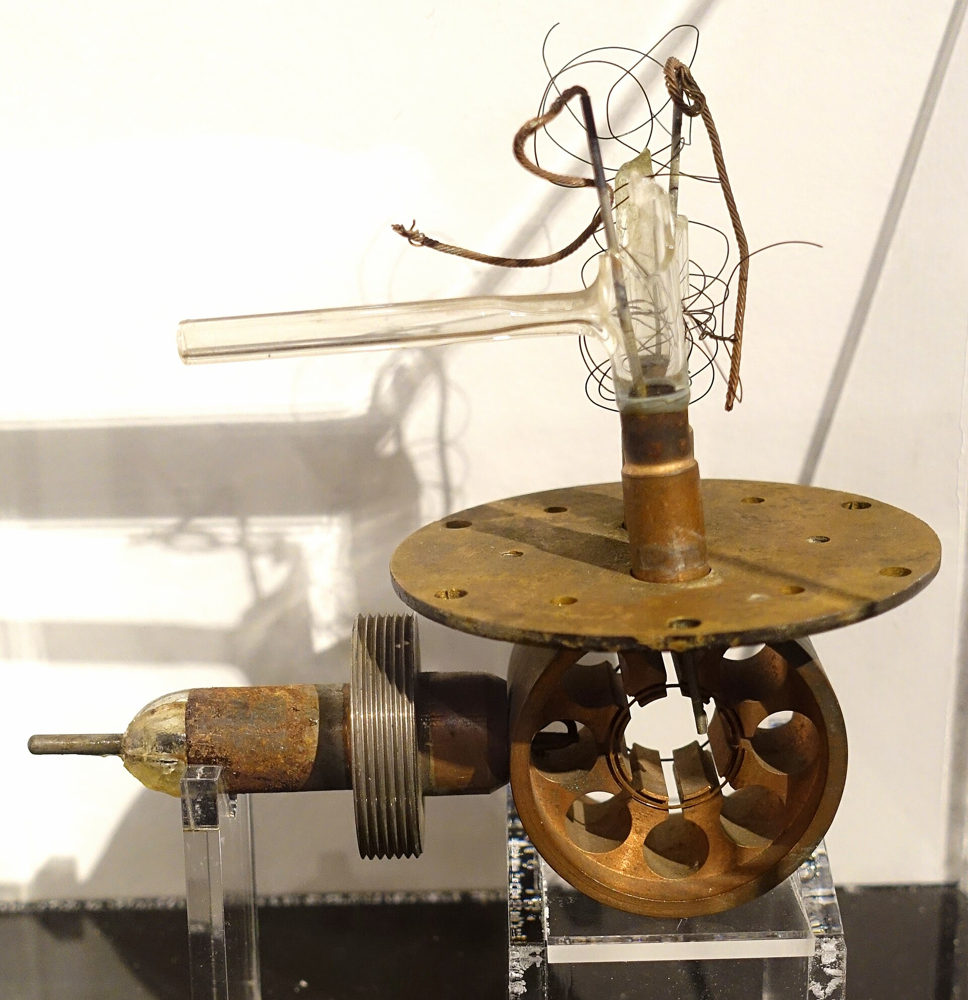

第 7 章
磁控管渡海
大西洋在九月的尾巴上并不平静。那艘船走的是之字形航线，每一次转向都让船体发出一阵低沉的呻吟。甲板下的船舱里，一个黑色金属箱子被绳索固定在舱壁上，旁边始终坐着人。

不是轮班看守——代表团成员们几乎都聚在这个舱室里，不是开会，只是守着。箱子没有武装押运，没有任何外交豁免文件的保护，如果德国潜艇的鱼雷击中这艘船，它就和任何一件普通行李一样沉入海底。
箱子里装着一个烤面包机大小的铜块。亨利·蒂泽德此时五十五岁，化学家出身，曾在第一次世界大战中参与航空研究，现在担任英国航空研究委员会主席。他率领的这个科学代表团成员不多，但都是各自领域的顶尖人物。
他们此行的目的地是美国，任务是说服一个尚未参战的国家认真对待一批来自濒临崩溃边缘的岛国的军事技术。
但在所有要移交的技术中，这个铜块是独一无二的。它没有正式名称，伯明翰大学的两个物理学家——约翰·兰德尔和亨利·布特——在八个月前才把它造出来，称呼它的时候只用了一个词：多腔磁控管。
它能在十厘米波长上产生近一千瓦的脉冲功率。这个数字在此刻的1940年意味着什么，需要放在一个更完整的坐标系里才能看清楚。
在此之前，所有实战部署的雷达都工作在米波波段。英国本土链的雷达天线塔发射的是十几米波长的电磁波，德国弗雷亚雷达的工作波长在两米多，美国海军在舰艇上试验的雷达波长也在米级。
这不是因为各国工程师不想用更短的波长——物理原理很清楚，波长越短，天线越小，波束越窄，分辨率越高。
一架夜间战斗机如果能在机鼻里装一部厘米波雷达，它就可以在黑暗中“看见”一架轰炸机的轮廓，而不是只能从地面站接收一个大致的方位指示。一艘护航舰如果能用厘米波雷达扫描海面，它就可以发现夜间浮出水面的潜艇指挥塔，而不是等潜艇逼近到目视距离才仓促应战。
问题在于功率。要产生足够强的厘米波电磁脉冲，当时的真空管技术走到了死胡同。
标准的三极管在米波波段还能勉强工作，但一旦进入十厘米以下的波长，电子在电极间的渡越时间就超过了振荡周期本身，管子要么不振荡，要么输出功率微弱到毫无实战价值。各国实验室在这个瓶颈上已经卡了好几年。德国人尝试过多种方案，最终转向了速调管路线，但速调管的功率同样上不去。美国人也在攻关，贝尔实验室和麻省理工的团队做过各种尝试，进展缓慢。
兰德尔和布特在1940年2月做出来的这个东西，从根本上绕开了三极管的限制。他们不靠栅极控制电子流，而是在一个实心铜块上钻出多个精确尺寸的谐振腔，用强磁场迫使电子在腔口旋转，激发出微波振荡。
原理不算新——单腔磁控管的概念在三十年代就有人提出过——但兰德尔和布特的突破在于多腔结构：六个谐振腔均匀排列在一个圆柱形铜块周围，电子云在磁场驱动下依次掠过每个腔口，像手指拨过琴弦一样激发谐振。腔与腔之间的耦合效应使得振荡稳定在一个精确的频率上，能量从其中一个腔通过一个环形天线耦合输出。
这个设计产生的结果让所有见过它工作的人都难以置信。在伯明翰实验室的第一次测试中，它就在九点八厘米波长上输出了四百瓦的脉冲功率，随后优化到接近一千瓦。
作为对比，当时美国最好的厘米波源——一种叫做“分裂阳极磁控管”的器件——在相同波长上的输出功率不到十瓦。两个数量级的差距。这不是渐进改良，是一次跃迁。
但此刻，1940年9月的大西洋航线上，这个铜块还只是一件实验室原型。它被手工制造出来，铜块上的六个谐振腔是熟练技师用精密钻床和铰刀一个腔一个腔加工出来的，腔壁的光洁度和尺寸精度依赖的是个人的手艺和经验。它的阴极是手工绕制的螺旋钨丝，磁场由一块永久磁铁提供，整个器件的装配和调试只有兰德尔和布特本人能完全掌握。
从这样一个手工艺品到能安装在每一架夜间战斗机和每一艘护航舰上的批量产品，中间横亘着一道巨大的鸿沟。
英国不是不知道这道鸿沟的存在。伯明翰大学所在的麦尔文电信研究所已经在尝试工程化，通用电气公司也接到了试产订单。
但1940年秋天的英国，工厂正在三班倒生产喷火战斗机和飓风战斗机的零件，造船厂在拼命填补被德国潜艇击沉的商船吨位，整个工业体系被挤压到了极限。蒂泽德在出发前向丘吉尔政府提交的评估报告写得很清楚：仅凭英伦三岛的产能和科研班底，厘米波雷达从实验室到实战装备的周期将被拉长到不可接受的程度。
所以这个铜块被装进了箱子。这是一场豪赌。赌注是英国当时最核心的军事机密之一——不，不是之一，在电子战领域，它就是最核心的。
多腔磁控管的图纸、测试数据和制造工艺一旦交给美国人，英国就失去了对这个技术方向的控制。如果美国人拿到了技术却不愿意全力投入生产，或者更糟——如果技术细节因为安全漏洞落入德国人手中——英国的厘米波优势将荡然无存。
但丘吉尔政府算的是一笔更大的账。1940年9月，不列颠空战正处于最激烈的阶段，德国空军对伦敦和各大工业城市的夜间轰炸已经持续了数周。
皇家空军的夜间拦截效率低得令人沮丧——没有机载雷达，战斗机飞行员只能在黑暗中依靠地面引导和目视搜索，拦截成功率不到百分之一。大西洋上的商船损失正在以每月数十万吨的速度攀升，德国潜艇在夜间浮出水面发动攻击几乎不受惩罚。
这两个战场上的劣势，根源都指向同一个技术缺口：缺乏小型化、高分辨率的雷达设备。如果能用厘米波雷达填上这个缺口，夜间空战和大西洋反潜的态势可能被根本扭转。
但前提是，这些装备必须在一年内——最多两年内——大规模列装，而不是等到1944年或1945年才姗姗来迟。美国的工业产能是唯一能在时间窗口内完成这项任务的变量。
底特律的汽车流水线可以转产雷达的金属部件，贝尔实验室在微波工程领域有深厚的理论积淀，麻省理工的物理学家团队可以投入设计和测试，而这一切都远离德国轰炸机的航程之外。
蒂泽德代表团的使命，就是把伯明翰实验室的火种带到一个有足够燃料的地方。
船舱里的讨论反复围绕着同一个问题：美国人会接吗？这不是一个技术问题。
美国尚未参战，国内孤立主义情绪浓厚，军方对来自外国的技术方案天然抱有戒心。美国海军研究实验室和陆军信号兵团都有自己的雷达项目，虽然进度落后，但他们为什么要相信一个濒临崩溃的岛国拿来的一个铜块比自己的方案更优越？即便演示成功了，技术转移的官僚程序又有多长？专利归属、生产合同、保密协议——任何一环陷入僵局，都可能让这个铜块在美国的保险柜里躺上半年。
蒂泽德本人对此有清醒的认识。他在出发前就确定了一个策略：不通过外交渠道层层递交，而是直接面对美国科学界和工程界的最高层。他要找的不是国务院的官员，而是像万尼瓦尔·布什这样的人——罗斯福总统的科学顾问，卡内基研究所所长，美国战时科研体系的实际操盘手。他要让物理学家对物理学家说话，让工程师对工程师说话。
官僚壁垒可以用技术演示的冲击力击穿，前提是演示本身足够震撼。船在海上走了将近两周。当纽约的天际线终于出现在地平线上时，代表团成员们已经在脑子里把演示方案推演了无数遍。
他们知道，真正的谈判不是在华盛顿的会议室里进行的，而是在某个实验室的工作台上——在那个氖灯被点亮、功率计指针猛跳的瞬间。
那个瞬间来得比他们预想的更快。蒂泽德代表团在华盛顿完成了最初的外交接触后，迅速将核心技术演示安排在了新泽西州的贝尔实验室总部。这不是偶然的选择。贝尔实验室是美国微波研究的重镇，它的工程师团队对厘米波功率瓶颈的每一个细节都了如指掌——正因为他们了解这个问题的难度，他们才会在亲眼看到解决方案时做出最迅速、最准确的判断。
演示的那一天，英国代表团从黑色金属箱子里取出了那个铜块。没有外壳，没有装饰，就是一个实心铜柱，上面钻着六个精密腔体，连着导线和磁铁。旁边是一套简易的测试装置：一段波导管，一个接收天线，以及一支氖灯——用来直观显示输出功率的简易指示器。当磁控管接通电源，高压脉冲注入阴极，磁场迫使电子在腔口旋转起来的时候，那支氖灯猛地亮了起来，亮度远超在场所有人对一个“厘米波源”的预期。
在场的贝尔实验室工程师们不需要翻译，不需要解释。他们看到氖灯的亮度，看到波长计的读数，看到功率计上的数字，立刻就明白了他们面对的是什么。这不是一个比他们现有方案“更好”的版本——这是一个他们从未见过的物理现象被成功驯化后产生的器件。英国人在八个月里走完了美国实验室可能还需要数年才能走完的路。
但真正决定历史走向的不是那个惊叹的瞬间，而是随后发生的对话。贝尔实验室的工程师们从最初的震惊中回过神来之后，提出的第一个问题不是关于物理原理——原理在演示中已经不言自明——而是关于制造工艺。铜块的纯度是多少？谐振腔的公差控制在什么范围？腔壁的表面光洁度要求多高？阴极的寿命有多长？批量生产中如何保证每个腔体的谐振频率一致？
这些问题切中了要害。兰德尔和布特的手工原型是一个匠人作品。谐振腔的精确尺寸是靠熟练技师的双手保证的，每个腔体在加工后都要经过手工微调才能达到设计频率。
阴极的绕制、磁场的校准、真空封接的工艺——每一个环节都包含着大量无法写在图纸上的“默会知识”。伯明翰的团队可以把设计图纸交给美国同行，但他们无法把技师的手感和经验装进那个黑色金属箱子。
这就是技术转移中最隐秘也最关键的环节。专利文件和设计图纸只能传递“显性知识”——尺寸、材料、电路拓扑、测试参数。但让一个复杂器件真正能批量生产的知识，很大程度上是“默会”的：它存在于技师调整刀具角度的习惯中，存在于工程师判断真空度是否达标的眼神中，存在于测试人员发现频率漂移时下意识去检查的那个焊点位置中。这些知识只有在共同工作、共同调试、共同解决问题的过程中才能传递。
美国团队很快就意识到了这一点。在贝尔实验室的初步测试中，当他们尝试按照图纸复制磁控管时，第一批样品的性能远不如英国原型。谐振腔的频率对不上设计值，输出功率忽高忽低，有些管子在工作几分钟后就出现真空度下降。
问题不出在设计原理上，而出在那些图纸上没有标明的细节里：铜块在加工前需要经过怎样的热处理来释放内应力？腔壁抛光时应该用哪种研磨膏？阴极的钨丝绕制密度在靠近两端时应该如何渐变？这些问题的答案不在文件柜里，在英国技师的手指上。
于是，技术转移进入了一个更深入也更耗时的阶段。英国团队开始在贝尔实验室和随后成立的麻省理工辐射实验室里，与美国同行一起站在工作台前，一遍遍地调试工艺参数。他们带来了伯明翰实验室使用的铜材样品，带来了自己调制的研磨膏配方，带来了记录着无数次试错结果的工作日志。美国工程师则用他们的方式重新理解这些经验：他们建立了更系统的测试流程，设计了更精密的工装夹具，开始用统计学方法分析工艺变量对成品率的影响。
这是一套全新的协作语言的形成过程。英国人说“腔壁摸上去应该像镜面”，美国人把这个转化为“表面粗糙度不超过零点零五微米”。英国人凭经验判断阴极温度是否合适，美国人设计了一套红外测温装置来精确监控。
英国技师靠手感和听觉判断加工状态，美国工程师把这些手感量化为切削速度、进给量和冷却液流量的具体参数。
这个过程并不总是顺畅的。两种工业文化之间的摩擦无处不在。英国团队习惯了小批量、高技艺的生产模式，对一个器件的“可制造性”的理解建立在熟练技工充足的前提下。美国团队则本能地追求大规模生产的标准化和可重复性，他们不能接受一个关键部件的性能依赖于某个特定技师的个人手艺。
在讨论磁控管铜块的加工方案时，英国方面最初推荐的是传统的手工精密镗削，而美国方面则坚持要开发一套可以上流水线的挤压成型工艺。争论持续了数周。
最终，美国方案占了上风——不是因为它在理论上更优越，而是因为美国的工业现实决定了它必须走这条路。底特律的汽车工厂可以转产雷达零件，但那些工厂里没有能手工精镗谐振腔的技师。
如果厘米波雷达要装备数百艘军舰和数千架飞机，磁控管的月产量必须从几台提高到几百台乃至几千台，手工工艺在这个数量级上毫无意义。麻省理工辐射实验室的成立加速了这个转型。
1940年11月，在蒂泽德代表团完成演示后不到两个月，万尼瓦尔·布什推动成立了这个专门从事微波雷达研发的机构。它的组织模式在当时是革命性的：扁平化结构，跨学科团队，以交付为目标而不是以论文为导向。物理学家、电气工程师、机械工程师、化学家和技工在同一个开放空间里工作，理论计算、电路设计、材料实验和样品制造之间的反馈循环被压缩到最短。
这种模式不是凭空创造的——它在很大程度上借鉴了英国麦尔文电信研究所的经验，但辐射实验室把它放大到了一个前所未有的规模。到战争结束时，这个实验室将雇佣近四千人，年度预算超过四千万美元，成为美国战时最大的单一科研项目之一。
辐射实验室接手的第一个重大任务就是磁控管的工程化量产。实验室的团队对兰德尔-布特设计进行了系统的重新审视：他们将谐振腔的数量从六个增加到八个甚至更多，以进一步提高功率和频率稳定性；他们测试了不同的铜合金配方，寻找导电性和加工性之间的最优平衡；
他们重新设计了阴极结构，使寿命从最初的几十小时延长到数百小时；他们与西屋电气和雷声公司合作，开发了专用的真空封接设备和批量测试台。
到1941年春天，美国制造的磁控管已经开始从生产线上下来。第一批产品的性能还不太稳定——有些管子的输出功率只有英国原型的一半，有些管子的频率在运行中会缓慢漂移——但这些问题在持续的工艺改进中被逐一解决。到1941年底，美国月产磁控管的数量已经超过了英国全年的产量。
这个数字背后是一个根本性的变化：厘米波雷达的技术重心开始从英国向美国转移。英国发明了多腔磁控管，并做出了第一个可用原型；但把它变成一种可以大规模部署的武器系统的，是美国的工业机器。
辐射实验室随后开发的一系列厘米波雷达——用于机载拦截的SCR-720、用于海面搜索的SG雷达、用于炮瞄的SCR-584——都是在英国原始发明基础上的美国再创新。蒂泽德使命成功了，但成功的方式和规模超出了英国人的预期和控制。
他们原本期望的是美国工业产能对英国技术方案的补充——英国继续主导研发方向，美国负责批量制造。但现实是，一旦美国的科研体系和工业能力被充分动员起来，它们就不可避免地会主导整个技术演进的方向。
辐射实验室聚集的人才密度和投入的资源规模，是麦尔文研究所无法匹敌的。到1942年以后，厘米波雷达领域几乎所有重要的后续突破——更高功率的磁控管、更精密的微波接收机、更先进的自动跟踪系统——都来自美国而非英国。
这不是因为英国科学家失去了创造力，而是因为技术演进的逻辑本身决定了这一点。一项技术从实验室原型走向大规模部署的过程中，后续的工程改进、工艺优化和应用开发需要持续的大量投入。谁掌握了这个阶段的资源，谁就掌握了技术演进的主导权。
英国在1940年做出了最关键的原发性突破，但在随后的工程化竞赛中，它的工业体量不足以支撑一个独立的、完整的厘米波雷达产业。蒂泽德本人对此并非没有预见。
他在1942年的一份备忘录中写道，英国在厘米波领域的先发优势正在被美国的工业规模所抵消，英国面临的选择是：要么接受在合作框架内的从属地位，要么投入巨资建设独立的研发和生产体系——而后者在战争资源极度紧张的情况下几乎不可能实现。英国最终选择了前者：它继续在特定领域保持技术优势，例如电子对抗和信号情报，但在雷达硬件的大规模生产和后续研发上，越来越依赖于通过租借法案从美国获得的装备。
那个装在黑色金属箱子里穿越大西洋的铜块，就这样完成了它的使命——同时也完成了它所承载的技术优势从英国向美国的转移。
1942年初，第一批美国制造的机载厘米波雷达开始装备英国皇家空军的夜间战斗机中队。美国海军护航舰只开始安装SG海面搜索雷达，这种雷达能在完全黑暗的海面上发现浮出水面的德国潜艇指挥塔。大西洋之战的态势即将发生根本性变化，而驱动这种变化的磁控管，正在底特律和波士顿的工厂里以每月数百台的速度被制造出来。
那个曾经需要熟练技师花数天时间手工调试的铜块，现在已经成了一道流水线上的标准产品。它的每一个谐振腔都由精密冲压模具一次成型，每一个阴极都由自动绕线机批量绕制，每一道真空封接都由程序控制的加热炉精确完成。伯明翰实验室的手艺活变成了美国工业的标准化作业。铜块渡过了海。但它渡海之后，就不再只属于送它过海的人了。